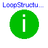
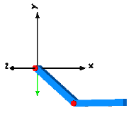

Tutorial

Information
Tutorial of package MultiBody
Library MultiBody is a free Modelica package providing
3-dimensional mechanical components to model in a convenient way
mechanical systems, such as robots, mechanisms, vehicles.
This package contains a tutorial of the MultiBody library.
Overview of MultiBody library
Information
Overview of MultiBody Library
Library MultiBody is a free Modelica package providing
3-dimensional mechanical components to model in a convenient way
mechanical systems, such as robots, mechanisms, vehicles.
A basic feature is that all components have animation information
with appropriate default sizes and colors. A typical screenshot of the
animation of a double pendulum is shown in the figure below, together
with its schematic.


Note, that all components - the coordinate system of the world frame,
the gravity acceleration vector, the revolute joints and the
bodies - are visualized in the animation.
This library replaces the long available ModelicaAdditions.MultiBody
library, since it is much more easier to use and more powerful.
The main features of the library are:
- About 40 main components, i.e., joint, force, part,
body, sensor and visualizer components that are ready to use
and have useful default animation properties. One-dimensional
force laws can be defined with components of the Modelica.Mechanics.Rotational
and of the Modelica.Mechanics.Translational library and can be
connected via available flange connectors to MultiBody
components.
- A World model has to be present in every model on top
level. Here the gravity field is defined (currently: no gravity,
uniform gravity, point gravity), the visualization of the
world coordinate system and default settings for animation.
If a world model is not present, it is automatically provided
together with a warning message.
- Built-in animation properties of all components, such as
joints, forces, bodies, sensors. This allows an easy visual
check of the constructed model. Animation of every component
can be switched off via a parameter. The animation of a complete
system can be switched off via one parameter in the world
model. If animation is switched off, all equations related
to animation are removed from the generated code. This is especially
important for real-time simulation.
- Automatic handling of kinematic loops.
Components can be connected together in a nearly arbitrary fashion.
It does not matter whether components are flipped. This does not
influence the efficiency. If kinematic loop structures occur,
this is automatically handeled in an efficient way by a new
technique to transform a certain class of overdetermined sets of
differential algebraic equations symbolically to a system where
the number of equations and unknowns are the same (the user need
not cut loops with special cut-joints to construct a
tree-structure).
- Automatic state selection from joints and bodies.
Most joints and all bodies have potential states. A Modelica
translator, such as Dymola, will use the generalized coordinates
of joints as states if possible. If this is not possible,
states are selected from body coordinates. As a consequence,
strange joints with 6 degrees of freedom are not necessary
to define a body moving freely in space. An advanced user
may select states manually from the Advanced menu of the
corresponding components or use a Modelica parameter modification
to set the "stateSelect" attribute directly.
- Analytic solution of kinematic loops. The non-linear
equations occuring in kinematic loops are solved analytically
for a large class of mechanisms, such as a 4 bar mechanism,
a slider-crank mechanism or a MacPherson suspension. This is performed
by constructing such loops with assembly joints JointXXX,
available in the MultiBody.Joints package. Assembly joints consist
of 3 joints that have together 6 degrees of freedom, i.e., no
constraints.They do not have potential states. When the motion
of the two frame connectors are provided, a non-linear system of
equation is solved analytically to compute the motion of the 3 joints.
Analytic loop handling is especially important for real-time simulation.
- Line force components may have mass.
Masses of line force components are located on the line on which
the force is acting. They approximate the mass properties of
a real physical device by one or two point masses. For example,
a spring has often significant mass that has to be taken into
account. If masses are set to zero, the additional code to handle
these point masses is removed. If the masses are taken into
account, the calculation overhead is small (the reason is that
the occuring kinematic loops are analytically solved).
Note, in this Beta-release, not all provided line force
components have already an optional mass. This will be fixed
in the next release.
- Force components may be connected directly together, e.g.,
3-dimensional springs in series connection. Usually,
multi-body programs have the restriction that force components
can only be connected between two bodies. Such restrictions are
not present in the Modelica multi-body library, since it is
a fully object-oriented, equation based library. Usually, if
force components are connected directly together, non-linear
systems of equations occur. The advantage is often, that this
may avoid stiff systems that would occur if a small mass has
to be put in between the two force elements.
- Initialization definition is available via menus.
Initialization of states in joints and bodies can be
performed in the parameter menu, without typing Modelica
statements. For non-standard initialization, the usual
Modelica commands can be used.
- Multi-body specific error messages. Annotations
and assert statements have been introduced that provide
in many cases warning or error messages that are related
to the library components (and not to specific equations
as it is usual in Modelica libraries). This requires
appropriate tool support, as it is, e.g., available in Dymola.
- Inverse models of mechanical systems can be easily
defined by using motion generators, e.g.,
Modelica.Mechanics.Rotational.Position. Also, non-standard
inverse models can be generated, e.g., when elasticity is present
it might be necessary to differentiate equations several times.
- About 45 functions to operate in a convenient way on
orientation objects, e.g., to transform vector quantities between
frames, or compute the orientation object of a planar rotation.
The basic idea is to hide the actual definition of an orientation
by providing essentially an Orientation type together with
functions operating on instances of this type. Orientation
objects based on a 3x3 transformation matrix and on quaternions
are provided. As a side effect, the equations in all other
components are simpler and easier to understand.
A first example
Information
A first example
As a first example it shall be demonstrated how to build up, simulate
and animate a simple pendulum.
A simple pendulum consisting of a body and a revolute joint
with linear damping in the joint, is first build-up as
Modelica composition diagram, resulting in:

In the following figure the location of the used
model components is shown. Drag these components in the diagram layer
and connect them according to the figure:

Every model that uses model components from the MultiBody library
must have an instance of the MultiBody.World model on highest level.
The reason is that in the world object the gravity field is defined
(uniform gravity or point gravity), as well as the default sizes of
animation shapes and this information is reported to all used
components. If the World object is missing, a warning message is
printed and an instance of the World object with default settings is
automatically utilized (this feature is defined with annotations and
is, e.g., supported by Dymola).
In a second step the parameters of the dragged components need to be
defined. Some parameters are vectors that have to be defined with respect
to a local coordinate system of the corresponding component. The easiest
way to perform this is to define a reference configuration of your
multi-body model: In this configuration, the relative coordinates of
all joints are zero. This means that all coordinate systems on all
components are parallel to each other. Therefore, this just means
that all vectors are resolved in the world frame in this configuration.
The reference configuration for the simple pendulum shall be defined
in the following way: The y-axis of the world frame is directed
upwards, i.e., the opposite direction of the gravity acceleration.
The x-axis of the world frame is orthogonal to it. The revolute joint
is placed in the origin of the world frame. The rotation axis of the revolute
joint is directed along the z-axis of the world frame. The body is
placed on the x-axis of the world frame (i.e., the rotation angle of the
revolute joint is zero, when the body is on the x-axis).
In the following figures the definition of this reference configuration
is shown in the parameter menus of the revolute joint and the body:


Translate and simulate the model, e.g., with Dymola.
Automatically, all defined components are visualized in
an animation using default absolute or relative sizes
of the components. For example, a body is visualized as
a sphere and as a cylinder. The default size of the sphere is defined
as parameter in the world object. You may change this size
in the "Animation" parameter menu of the body (see parameter menu
above). The default size of the cylinder is defined relatively
to the size of the sphere (half of the sphere size).
With default settings, the following animation is defined:

The world coordinate system is visualized as coordinate system
with axes labels. The direction of the gravity acceleration
vector is shown as green arrow. The red cylinder represents
the rotation axis of the revolute joint and the light blue
shapes represent the body. The center of mass of the body is
in the middle of the light blue sphere.
Release notes
Information
Release notes
Version 0.98, 2003-10-27
This version is not backward compatible to the previous
MultiBody versions, since the initialization has changed.
Parameter "startValuesFixed" is no longer present and is
replaced by parameter "initType" (see below). Models generated with
previous MultiBody versions are automatically converted to the new
release.
- Tutorial improved.
- New model "MultiBody.Joints.Assemblies.JointSSP"
Spherical - spherical - prismatic joint aggregation with mass
(no constraints, no potential states) for analytic loop handling.
- New model "MultiBody.Forces.LineForceWithTwoMasses"
General line force component with two optional point masses on
the connection line.
- New model "MultiBody.Forces.Force"
Force acting between two frames, defined by 3 input signals
and resolved in frame_b or in frame_resolve.
- New model "MultiBody.Forces.Torque"
Torque acting between two frames, defined by 3 input signals
and resolved in frame_b or in frame_resolve
- New model "MultiBody.Forces.ForceAndTorque"
Force and torque acting between two frames, defined by
6 input signals and resolved in frame_b or in frame_resolve.
- New model "MultiBody.Examples.ForceAndTorque"
Demonstrate usage of ForceAndTorque element.
- New model "MultiBody.Examples.LineForceWithTwoMasses"
Demonstrate line force with two point masses using a
JointUPS and alternatively a LineForceWithTwoMasses component.
- New model "MultiBody.Examples.InitSpringConstant"
Determine spring constant such that system is in steady
state at given position.
- Removed model "MultiBody.Examples.ForceWithMass"
This demo is included in the new LineForceWithTwoMasses
example.
- Change in "MultiBody.Parts.Body"
The default of parameter "useQuaternions" in the
"Advanced" menu is changed from false to true.
This means that by default quaternions are used as
body states.
- Change in all models that have potential states:
New initialization introduced replacing the previous
"startValuesFixed" parameter. The new parameter "initType"
can have the following values:
initType = MultiBody.Types.Init
.Free : no initialization
(= same as previous startValuesFixed = false)
.PositionVelocity : initialize generalized position and velocity variables
(= same as previous startValuesFixed = true)
.SteadyState : initialize in steady state
(velocity and acceleration are zero)
.Position : initialize only generalized position variable(s)
.Velocity : initialize only generalized velocity variable(s)
.VelocityAcceleration : initialize generalized velocity and
acceleration variables
.PositionVelocityAcceleration: initialize generalized position, velocity
and acceleration variables
Version 0.97, 2003-09-10
Bug fixed in model "MultiBody.Parts.Body": There was an
error when switching
from one set of Cardan angles to another one when the actual
Cardan angles are close to their singularity.
This has been corrected.
Version 0.96, 2003-08-04
This was the first version delivered with Dymola.
HTML-documentation generated by Dymola Wed Oct 29 09:15:16 2003
.